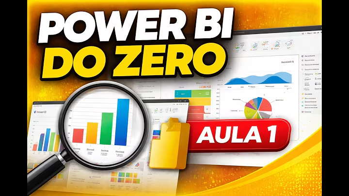

Engenharia e Dados:
Transformando o chão de fábrica
em decisões inteligentes.
Profissional com 15 anos de experiência na indústria, sendo 10 deles no setor siderúrgico. Atuo na integração entre engenharia e análise de dados para transformar informações operacionais (SAP, MES, SGI) em conhecimento capaz de gerar eficiência, produtividade, redução de perdas e maior confiabilidade de ativos.
Gestão de Indicadores & Projetos
Manutenção & Operação
Gestão de Custos e Indicadores
Python, Power Platform e SQL
Ganhos mensuráveis e redução de perdas
Soluções Industriais que Geram Resultados
Projetos aplicados na mitigação de falhas mecânicas, saneamento de dados de ativos e integração corporativa com SAP, MES e Power BI.
Dashboard de Custos de Manutenção — Avine
Projeto de BI interrompido com dados descentralizados e bases espalhadas entre MySQL e planilhas Excel manuais sem governança.
Mapeamento e saneamento das bases, consolidação das regras de negócio e migração para MySQL como fonte centralizada, eliminando planilhas manuais.
Portal de Indicadores de Manutenção — ArcelorMittal
Indicadores multi-origem complexos dispersos em sistemas industriais legados (SAP, MES e SGI), demandando relatórios manuais e com baixa governança.
Padronização, modelagem dimensional e publicação de dashboards executivos em Power BI integrados diretamente para as reuniões diárias da liderança.
Aplicativo Mobile para Gestão de Manutenção em Campo (PM Mobit)
Rotinas de inspeção de equipamentos críticos e apontamentos em campo realizados manualmente em papel, gerando baixa rastreabilidade, lentidão e atrasos no controle de SLA.
Desenvolvimento de aplicação móvel corporativa em Flutter e Dart integrada ao Supabase (Auth, Database e Storage). Digitalização de checklists com evidências fotográficas, abertura automática de ordens corretivas ao detectar não conformidades, controle rigoroso de SLA e dashboard analítico de produtividade e indicadores operacionais em tempo real.
Aplicativo para Cálculo da Disponibilidade dos Equipamentos — ArcelorMittal
Extração e tratamento manual recorrente de dados operacionais brutos do sistema MES para cálculo da disponibilidade dos equipamentos, gerando lentidão e sobrecarga operacional.
Desenvolvimento de pipeline automatizado para extração e tratamento dos dados do sistema MES, com interface operacional ágil em Python e relatórios com visualização em tela e exportação para Excel.
Automação em Python para Inconsistências Contábeis — ArcelorMittal
Integração e conferência manual de dados entre múltiplas planilhas Excel, com alto risco de classificações incorretas entre custos fixos e variáveis.
Desenvolvimento de script em Python integrando dados de múltiplas planilhas, com tratamento, padronização, transformação e regras automáticas de validação contábil para relatórios gerenciais.
Automação em Python para Requisições de Compra — ArcelorMittal
Divergências de centros de custo e erros de classificação em requisições de compras descobertos tardiamente, gerando retrabalho operacional e desvios contábeis.
Automação em Python integrando e validando dados de múltiplas fontes para correção proativa de desvios, associada a dashboard gerencial em Power BI para monitoramento contínuo.
Portal do Aluno · Trilha Técnica Arcade
Ambiente interativo no estilo Duolingo e fliperama retrô para alunos de cursos técnicos praticarem e se autoavaliarem na prática. Sem barreiras punitivas: o estudante foca na superação dos seus próprios recordes e recebe feedback imediato a cada questão.
Ferramentas Industriais Abertas
Ferramentas operacionais de confiabilidade, planejamento e análise técnica desenvolvidas para execução client-side de alto desempenho no navegador.
Calculadora 52 Semanas
Conversão instantânea de datas para o padrão ISO 8601 (S01–S52), dia do ano e dia útil para planos mestres de manutenção e sprints.
Controle de Parada
Cálculo de downtime e horas decimais com matriz de severidade automática: Relatório de Turno, Análise FCA ou Análise de Falha (RCA).
Curva S & Tendência
Acompanhamento físico (planejado × realizado) com Trava de Eficiência industrial, cálculo de SPI, desvio de cronograma e projeção de término.
Matriz FMEA & RPN
Análise de Modos de Falha com RPN dinâmico, alerta de Severidade Crítica (S ≥ 8), ciclo completo de ações corretivas e curva de Pareto.
Trajetória Consolidada no Chão de Fábrica
Do trabalho prático na manutenção mecânica à arquitetura analítica de dados e consultoria executiva.
Consultor em Dados
BI Avançado, Modelagem de Indicadores e Soluções Tecnológicas
- check_circle Análise de dados para identificação de padrões, tendências e oportunidades de melhoria em processos de negócio.
- check_circle Desenvolvimento de dashboards e relatórios gerenciais em Power BI para acompanhamento de indicadores de desempenho (KPIs).
- check_circle Coleta, tratamento, limpeza, transformação e consolidação de dados provenientes de diferentes fontes.
- check_circle Modelagem de indicadores e métricas para suporte à tomada de decisão baseada em dados.
- check_circle Desenvolvimento de aplicações utilizando Power Apps para coleta, validação e gestão de informações.
- check_circle Automatização de processos e elaboração de soluções para aumentar a eficiência operacional e reduzir atividades manuais.
- check_circle Criação de consultas, análises e relatórios utilizando SQL, Excel e Python.
- check_circle Capacitação de equipes por meio de treinamentos e consultorias em análise de dados, Power BI, Excel e ferramentas Microsoft Power Platform.
Instrutor
Formação Técnica em Data Analytics, Engenharia e Manutenção Industrial
- check_circle Condução de treinamentos técnicos focados em Data Analytics, Engenharia de Produção e processos de Manutenção Industrial.
- check_circle Execução de atividades práticas com Power BI, Excel, SQL e Python para tratamento e visualização de dados operacionais.
- check_circle Criação de dashboards e indicadores de desempenho (KPIs) para suporte estratégico e monitoramento de resultados.
- check_circle Desenvolvimento de soluções com Power Apps e automações para otimização da coleta e gestão de informações industriais.
- check_circle Produção de materiais didáticos e estudos de caso aplicados à melhoria de processos de produção e manutenção.
- check_circle Capacitação profissional no uso de tecnologias e ferramentas de engenharia para análise e solução de problemas baseada em dados.
Analista de Confiabilidade Mecânica
Monitoramento de Ativos, Indicadores Críticos e Soluções Digitais
- chevron_right Análise de dados de manutenção para identificação de padrões de falha e oportunidades de melhoria.
- chevron_right Desenvolvimento de dashboards em Power BI para acompanhamento de indicadores (MTBF, MTTR, backlog, disponibilidade).
- chevron_right Aplicação de análise de causa raiz baseada em dados históricos de falhas.
- chevron_right Estruturação e monitoramento de KPIs para suporte à tomada de decisão.
- chevron_right Priorização de ordens de serviço com base em criticidade e análise de dados.
- chevron_right Criação de soluções digitais com Power Apps para coleta e tratamento de dados operacionais.
- chevron_right Apoio na definição de estratégias de manutenção baseadas em dados.
Programador de Manutenção
Otimização de Ordens de Manutenção e Gestão de Desvios
- chevron_right Análise de dados de ordens de manutenção para otimização da programação.
- chevron_right Monitoramento de indicadores e geração de insights para melhoria do planejamento.
- chevron_right Priorização de atividades com base em criticidade e dados históricos.
- chevron_right Identificação de desvios e oportunidades de melhoria no processo através de análise de dados.
Técnico de Inspeção/Planejamento Mecânico
Manutenção Preventiva, Preditiva e Dados de Condition
- chevron_right Coleta e análise de dados de inspeção para suporte à manutenção preventiva e preditiva.
- chevron_right Identificação de padrões de falha em equipamentos industriais.
- chevron_right Apoio à tomada de decisão com base em dados de condition dos ativos.
- chevron_right Utilização de dados para priorização de intervenções de manutenção.
Instrutor de Metalurgia/Mecânica
Formação Profissional em Metalurgia e Mecânica
- chevron_right Desenvolvimento de materiais técnicos e didáticos voltados à formação profissional na área de metalurgia e mecânica.
- chevron_right Estruturação e organização de conteúdos técnicos.
- chevron_right Planejamento e ministração de treinamentos e palestras para turmas técnicas.
- chevron_right Acompanhamento do aprendizado dos alunos e suporte no desenvolvimento de competências técnicas.
Matriz Técnica Calibrada
Sincronizando tecnologia operacional (TO) de fábrica com engenharia moderna de dados.
BI & Visualização
Desenvolvimento de dashboards estratégicos em Power BI, domínio de DAX, modelagem relacional e dimensional (Star Schema e Normalização), Power Query e relatórios analíticos em Excel Avançado.
Programação & Automação
Desenvolvimento de aplicativos móveis em Flutter e Dart integrados a Supabase/PostgreSQL, automações de processos com Python (Pandas, scripts ETL), fluxos com Power Automate, Power Apps e Google Apps Script.
Banco de Dados & ETL
Construção e otimização de consultas complexas em SQL, modelagem relacional e dimensional, administração de instâncias em PostgreSQL e MySQL, e integração de fluxos via Pentaho Data Integration (PDI).
Sistemas & Confiabilidade
Extração e integração com SAP, MES, SGI e Excel, gestão de indicadores de manutenção (MTBF, MTTR, disponibilidade, backlog), Análise de Causa Raiz (RCA) e metodologia MASP de solução de problemas.
Formação Acadêmica & Certificações
Base sólida em tecnologia e engenharia de produção aliada a certificações e capacitações práticas de mercado.
Engenharia de Produção
Cursando 7º Semestre
Análise e Desenv. de Sistemas
Tecnólogo
Formação em Data Analytics
Imersão em Dados & Negócios
Certificação Analista de Dados
Google Data Analytics
Business Intelligence
40 horas de imersão
Power BI para Análise de Dados
72 horas de prática avançada
Gestão de Projetos
45 horas de formação
Metodologia MASP
Análise e Solução de Problemas
Vídeos & Aulas Práticas
Canal no YouTube dedicado à análise de dados industriais, Power BI, Python, SQL e gestão da manutenção, conectando teoria à prática de fábrica por meio de aulas aplicadas de desenvolvimento de soluções.

Power BI do Zero: Dashboard de Manutenção de Frota
Construção passo a passo de um dashboard gerencial de manutenção de frotas e ordens de serviço no Power BI, calculando taxa de manutenção preventiva (28.19%), volume de OS por mês e análise detalhada por árvore de decomposição.

Power Apps: App de Gestão e Controle de Estoque
Desenvolvimento prático de um aplicativo corporativo em Power Apps para controle de estoque em tempo real, abrangendo criação de telas interativas, validações, cadastros e movimentações operacionais no chão de fábrica.
Vamos construir soluções inteligentes para a sua operação?
Aberto a oportunidades profissionais, consultorias em inteligência de manutenção e dados industriais, projetos em Power BI corporativo e automações de processos.